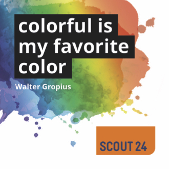

Diversity in Tech Dashboard
Diversity in Tech Community
Goal Tracker
By the end of 2017 we want to have doubled the
quota of female engineers working at Scout24! With a quota of 12% at the
beginning of 2017, it means, that we have to reach 24%!
Current Stats
Total
Product Engineering IS24
Product Engineering AS24
Platform Engineering
Data & Analytics